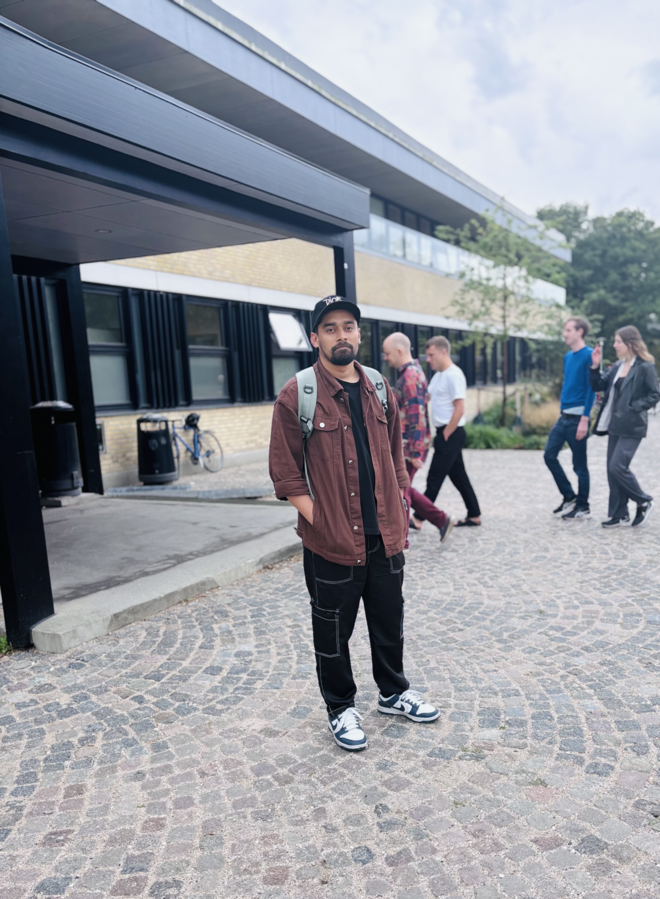

Human-Centered AI · UI/UX Design
A designer turned researcher, currently pursuing my Master's in Human-Centered Artificial Intelligence at the Technical University of Denmark (DTU). I care about building AI systems that stay understandable, trustworthy, and genuinely useful to the people who rely on them.

01. About
I'm a designer-turned-researcher based in Denmark. I started out designing digital products as a Junior UI/UX Designer, and I'm now studying how artificial intelligence can be designed around real human needs, behaviors, and trust — rather than the other way around. I enjoy the space where interface design, research, and applied AI meet.
02. Education
MSc in Human-Centered Artificial Intelligence
OngoingTechnical University of Denmark (DTU)
Studying the design, ethics, and human factors of AI systems — combining interaction design with applied machine learning.
BSc in Computer Science
CompletedAmerican International University Bangladesh (AIUB)
Graduated with a CGPA of 3.34, building a strong foundation in software development and computing fundamentals.
03. Experience
Junior UI/UX Designer
Concept Soft
Designed and refined user interfaces and experiences for digital products, working across the design process from research to prototyping.
04. Areas of Focus
05. Get in Touch
I'm always open to conversations about human-centered AI, design, or potential collaborations. Reach out through any of the channels below.